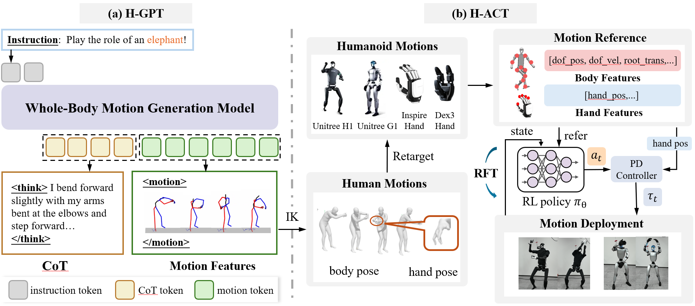

FRoM-W1: Towards General Humanoid Whole-Body Control with Language Instructions
Abstract
Humanoid robots are capable of performing various actions such as greeting, dancing, and even backflipping. However, these motions are often hard-coded or specifically trained, which limits their versatility. In this work, we present FRoM-W1, an open-source framework designed to achieve general humanoid whole-body motion control using natural language. To universally understand natural language and generate corresponding motions, as well as enable various humanoid robots to stably execute these motions in the physical world under gravity, FRoM-W1 operates in two stages: (a) H-GPT: Utilizing massive human data, a large-scale language-driven human whole-body motion generation model is trained to generate diverse natural behaviors. We further leverage the Chain-of-Thought technique to improve the model’s generalization in instruction understanding. (b) H-ACT: After retargeting generated human whole-body motions into robot-specific actions, a motion controller that is pretrained and further fine-tuned through reinforcement learning in physical simulation enables humanoid robots to accurately and stably perform corresponding actions. It is then deployed on real robots via a modular simulation-to-reality module. We extensively evaluate our framework on the Unitree H1 and G1 robots, demonstrating successful language-to-motion generation and stable execution in both simulation and real-world settings. We fully open-source the entire FRoM-W1 framework and hope it will advance the development of humanoid intelligence.
Foundational Humanoid Robot Model - Whole-Body Control, Version 1
Pipeline

H-GPT first translates language instructions into motion sequences using CoT. H-ACT then retargets the generated motions to different robot embodiments and executes these motions on real robots through motion-tracking control policies.
BibTeX
@misc{FRoM-W1,
author = {Peng Li, Zihan Zhuang, Yangfan Gao, Yi Dong, Sixian Li, Changhao Jiang, Shihan Dou, Zhiheng Xi, Enyu Zhou, Jixuan Huang, Hui Li, Jingjing Gong, Xingjun Ma, Tao Gui, Zuxuan Wu, Qi Zhang, Xuanjing Huang, Yu-Gang Jiang, Xipeng Qiu},
title = {FRoM-W1: Towards General Humanoid Whole-Body Control with Language Instructions},
url = {https://github.com/OpenMOSS/FRoM-W1},
year = {2025}
}